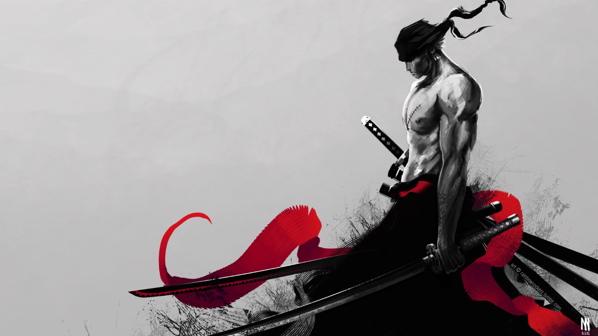
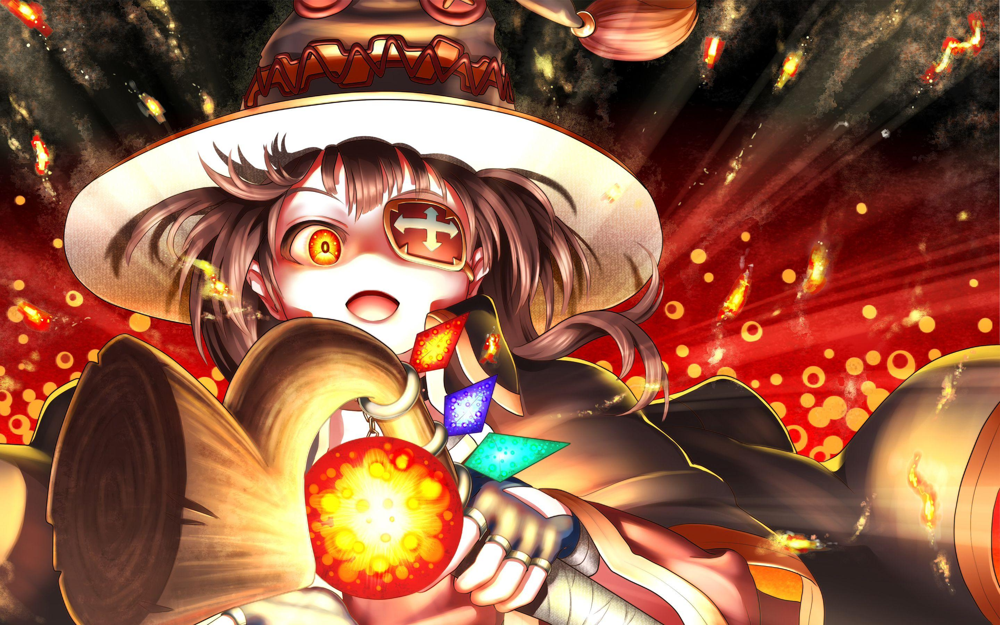
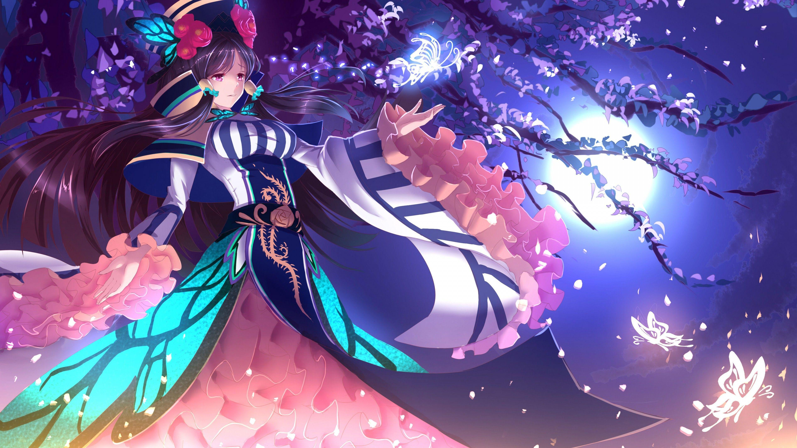
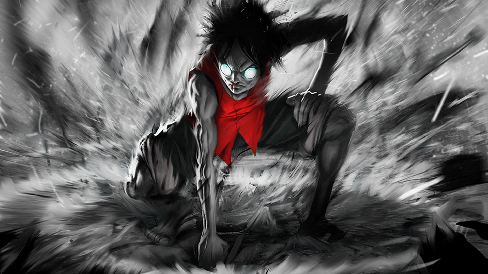

| Monkey D. Luffy is the captain of the Straw Hat Pirates, and dreamt of being a pirate since childhood from the influence of his idol and mentor Red-Haired Shanks. At the age of 17, Luffy sets sail from the East Blue Sea to the Grand Line in search of the legendary treasure, One Piece, to succeed Gol D. Roger as "King of the Pirates".He fights multiple antagonists, and aids and befriends the inhabitants of several islands on his journey. Usually cheerful, he becomes serious and even aggressive when he fights. Luffy uses his rubber body to concentrate his power, executing a range of attacks. In his signature attack, the Gum-Gum Pistol, he slingshots punches at opponents from a distance. Luffy also grows stronger over the course of the story by transforming his body through different "Gears;" this is reflected in his bounty, which is used to measure the threat he poses to the World Government. He is the grandson of Monkey D. Garp, who is a vice-admiral of the Navy; the son of Monkey D. Dragon, who is the leader of the Revolutionary Army;and sworn brother of Portgas D. Ace and Sabo. |
 |
 Satoru Gojo is one of the main protagonists of the Jujutsu Kaisen series. He is a special grade jujutsu sorcerer and widely recognized as the strongest in the world. Satoru is the pride of the Gojo Clan, the first person to inherit both the Limitless and the Six Eyes in four hundred years. He works as a teacher at the Tokyo Jujutsu High and uses his influence to protect and train strong young allies. Satoru Gojo is one of the main protagonists of the Jujutsu Kaisen series. He is a special grade jujutsu sorcerer and widely recognized as the strongest in the world. Satoru is the pride of the Gojo Clan, the first person to inherit both the Limitless and the Six Eyes in four hundred years. He works as a teacher at the Tokyo Jujutsu High and uses his influence to protect and train strong young allies. |
 | Roronoa Zoro, also known as "Pirate Hunter" Zoro,is a main combatant of the Straw Hat Pirates, one of their two swordsmen, one of the Senior Officers of the Straw Hat Grand Fleet,and is publicly recognized as the right-hand man of his crew's captain Monkey D. Luffy. Formerly a bounty hunter, he is the second member of Luffy's crew and the first to join it, doing so in the Romance Dawn Arc. |
 |
 |
|  |  |
|
|
| About us |
| Softonic Info |
| Help & Support |
| Jobs |
| Editorial Guidelines |
| Social media |
| Copyrights SOFTONIC INTERNATIONAL S.A © 1997-2024 - All rights reserved |